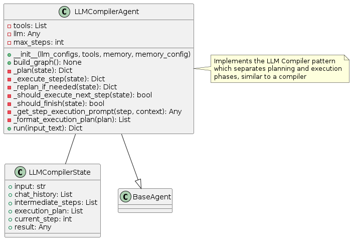
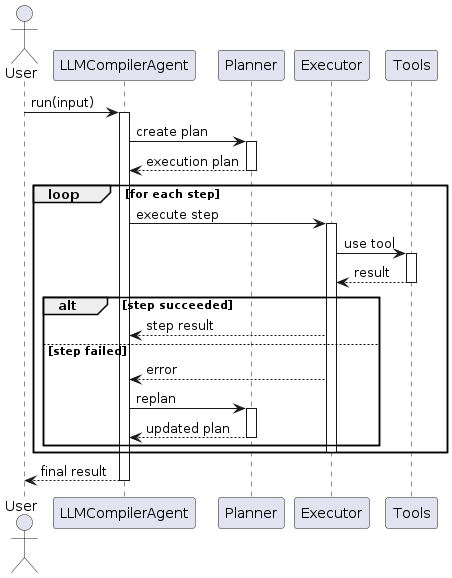
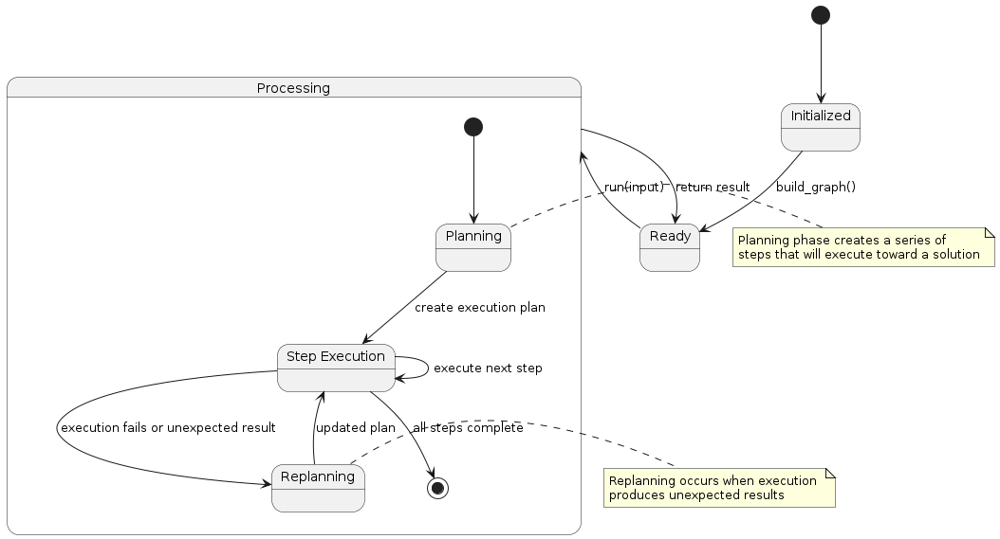

LLM Compiler Pattern
Overview
The LLM Compiler pattern separates the planning and execution phases of problem-solving, similar to how a compiler translates high-level code into executable instructions. This approach involves:
Planning Phase: The LLM generates a detailed execution plan with a series of steps
Execution Phase: Each step is executed sequentially, with possible replanning if needed
Error Handling: Includes mechanisms to detect and respond to execution failures
The key innovation of this pattern is the clear separation between planning (what to do) and execution (how to do it), leading to more predictable and controllable agent behavior.
Diagrams
Class Structure

The LLM Compiler pattern is implemented through:
LLMCompilerState: Tracks the execution plan, current step, intermediate results, and overall state
LLMCompilerAgent: Implements the planning and execution logic, with methods for planning, executing steps, and replanning when necessary
BaseAgent: The abstract base class from which the compiler agent inherits
Execution Flow

The execution flow follows:
User provides input to the LLMCompilerAgent
The Planner component creates a detailed execution plan
For each step in the plan:
The Executor component executes the step
If successful, the agent moves to the next step
If unsuccessful, the Planner revises the plan
Once all steps are complete, the final result is returned to the user
State Transitions

The LLM Compiler pattern transitions through these states:
Initialized: Agent is created but not yet ready
Ready: Agent is ready to process input
Processing: Agent is actively working on the task
Planning: Agent is creating or updating the execution plan
Step Execution: Agent is executing an individual step from the plan
Replanning: Agent is revising the plan due to execution failures or new information
Final state is reached when all steps in the plan are successfully executed
Use Cases
Complex Sequential Tasks: For tasks requiring multiple ordered steps
Structured Problem Solving: When a clear plan needs to be established before action
Reproducible Workflows: When consistency across multiple runs is important
Debugging-Friendly Applications: The separation of planning and execution makes it easier to identify and fix issues
Tasks Requiring Specialized Tools: When different steps might require different tools or approaches
Implementation Guide
Here’s a simple example of using the LLMCompilerAgent:
from agent_patterns.patterns import LLMCompilerAgent
from agent_patterns.core.tools import ToolRegistry
from langchain.tools import tool
# Define tools
@tool
def search(query: str) -> str:
"""Search for information about a topic."""
return f"Results for {query}: Some relevant information..."
@tool
def calculate(expression: str) -> str:
"""Calculate the result of a mathematical expression."""
try:
return f"Result: {eval(expression)}"
except:
return "Error in calculation"
# Create tool registry
tool_registry = ToolRegistry([search, calculate])
# Configure the LLMs
llm_configs = {
"default": {
"provider": "openai",
"model": "gpt-4o",
"temperature": 0.7
}
}
# Initialize the LLM Compiler agent
agent = LLMCompilerAgent(
llm_configs=llm_configs,
tool_provider=tool_registry,
max_steps=10
)
# Run the agent
result = agent.run("Calculate the population density of France by finding the population and area.")
print(result)
Example References
The examples directory contains implementations of the LLM Compiler pattern:
examples/llm_compiler_basic.py: Basic compiler pattern implementationexamples/llm_compiler_complex.py: Advanced implementation with error handling
Best Practices
Design the planning prompt to encourage detailed, step-by-step plans
Include expected outputs for each step to aid in error detection
Implement robust error handling in the execution phase
Consider different LLM configurations for planning vs. execution
Structure the plan format to be machine-readable for better processing
Include validation steps in the plan to verify intermediate results
Store successful plans in memory for reuse in similar future tasks